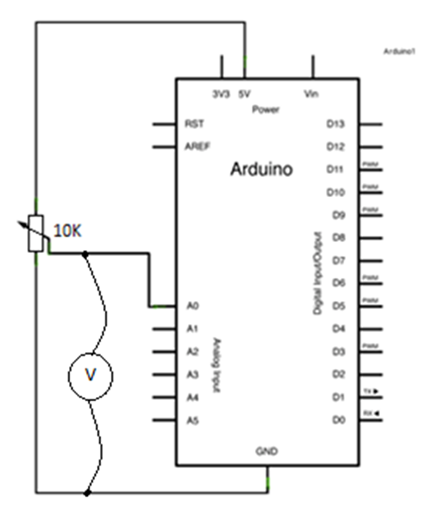

~
VJ2-Izrada jednostavnog Voltmetra
2.1 Analogni ulazi
Arduino ima mogućnost čitanja vrijednosti analognog napona na analognom pinu. Pročitani napon od 0V do 5V konvertira uz pomoć funkcije
analogRead() u cjelobrojne vrijednosti od 0 do 1023.
To su 1024 broja. (NULA JE BROJ).
Konvertirane vrijednosti ćemo ispisivati u SERIJSKOM MONITORU.
Potenciometar koristimo kao naponski djelitelj od 0V do 5V.
Električna shema

Montažna shema

Upišite sljedeći program.
void setup() {
Serial.begin(9600);
}
void loop() {
int potNapon = analogRead(A0);
Serial.println(potNapon);
delay(30);
}
Ugađanjem potenciometra brojevi se u SERIJSKOM MONITORU mijenjaju. U kojem rasponu?
UPIŠITE VRIJEDNOSTI. min_________ max_________
2.2 Izrada jednostavnog Voltmetra
ADC je analogno digitalni konverter...
Arduino UNO ima 10 bitni ADC jer je 210 = 1024 - 1. (DAC nema.)
5V / 1023 = 0.004887V
Koraci konverzije: 0.004887V tj. 4.887 mV
void setup() {
Serial.begin(9600);
}
void loop() {
float potNapon = 0.004887 * analogRead(A0);
Serial.print("VRIJEDNOST NAPONA JE : ");
Serial.print(potNapon);
Serial.println(" V");
delay(30);
}
Ugađanjem potenciometra napon se mijenja. U kojem rasponu?
UPIŠITE VRIJEDNOSTI. min______ max_____
2.3 Varijable
potNapon je varijabla!
Varijable koristimo za pohranu vrijednosti koje se mijenjaju tijekom programa...

Serial.begin() konfigurira serijsku vezu između Arduina i računala.
Sintaksa: Serial.begin(brzina)
Argumenti: brzina u baudima (bita u sekundi)
Serial.print() ili Serial.println() ispisuje zadano u Serijski monitor
Dodatak ln znači ispis u novi redak
analogRead() je funkcija koja čita napon na analognom pinu i pretvara ga u broj od 0 do 1023.
Sintaksa: analogRead(pin)
Argument: broj analognog pina
Funkcija analogRead() vraća vrijednost — pridružujemo je varijabli pomoću operatora =
Primjer: VARIJABLA = analogRead(pin)
© . Sva prava pridržana.